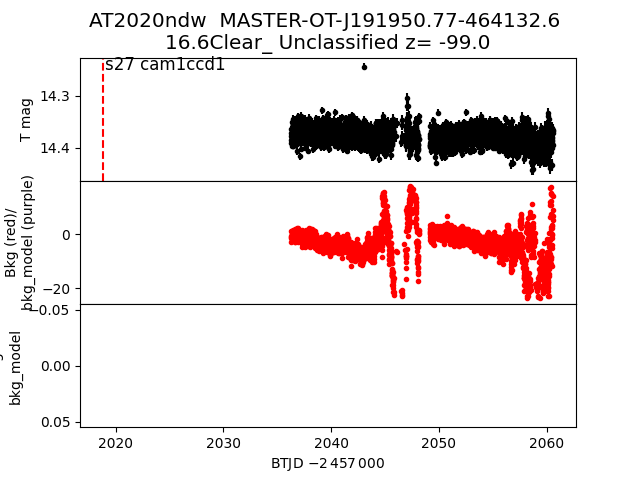
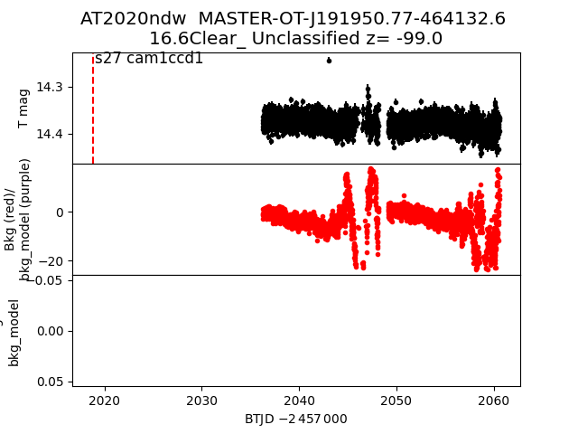

all transients in sector27 (37 total)
Each figure has three panels. The top panel shows the transient light curve, the middle panel shows the local background (estimated in an annulus), and the bottom panel shows a "background-model corrected" light curve. Details about the background model are in the README.
The vertical red line marks the time of discovery reported to TNS. Other useful metadata from TNS is in the figure title.
Note that the top and bottom panel are in magnitudes, while the middle panel is in differential flux units. The magnitudes are calibrated to the flux in the reference image used for image subtraction. Thus, flux from the host galaxy is included in these magnitudes.
3-sigma upper limits are plotted as triangles with no errorbars. A typical limiting magnitude is 19.6 in 30 minutes or 18.4 in 200 seconds (for low backgrounds).
The links allow you to download the light curve data as a text file.
More details in the README.
2020npl
2020ntn
2020oje
2020qdi
2020qmw
2020mxh
2020qrr
2020pzq
2020mym
 2020qdp
2020qsx
2020qtg
2020mtw
2020mud
2020ptv
2020mwr
2020ndn
2020neb
2020ntu
2020qdm
2020puq
2020qit
2020ppi
2020ovo
2020mxe
2020ndw

2020mjl
2020nlz
2020nss
2020pkw
2020oii
2020qcq
2020qir
2020qeb
2020ojk
2020qdp
2020qsx
2020qtg
2020mtw
2020mud
2020ptv
2020mwr
2020ndn
2020neb
2020ntu
2020qdm
2020puq
2020qit
2020ppi
2020ovo
2020mxe
2020ndw

2020mjl
2020nlz
2020nss
2020pkw
2020oii
2020qcq
2020qir
2020qeb
2020ojk
 2020myp
2020ork
2020myp
2020ork